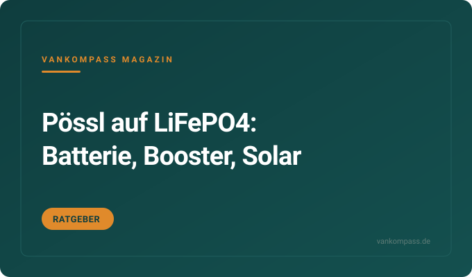
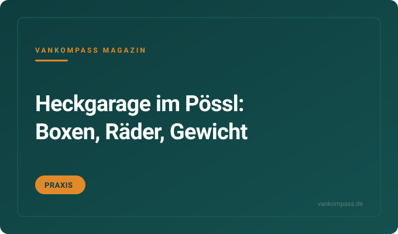

Praxis · Stauraum
Camper organisieren mit IKEA-Hacks: Filzboxen, Magnet-Besteck und eckige Dosen
Filzboxen in jedem Schrank, Magnetstreifen im Besteckkasten, eckige Dosen im Kühlschrank: So organisieren Campervan Crew ihren Ducato.
Camper · Kastenwagen
Alles für Kastenwagen auf Fiat-Ducato-Basis, vom Pössl über Globecar bis zum Selbstausbau: Bordbatterie, Querbett, Fahrerhaus-Isolierung, Einbruchschutz und Stauraum in der Heckgarage. Ratgeber, Vergleiche und eine Kaufempfehlung.
Redaktions-Tipp
Die mechanische Zusatzverriegelung für die Fahrerhaustüren des Ducato, die bekannte Schwachstelle jedes Kastenwagens auf dieser Basis.
Warum wir es empfehlen: Die Serienschlösser des Ducato gelten als leicht zu überwinden, und genau dort setzt die Verriegelung an. Sie passt an Pössl, Globecar, Knaus und alle anderen Aufbauten auf X250 und X290, weil das Fahrerhaus identisch ist.
Preis-Rangeca. 100 bis 200 €Stand Oktober 2026
Bei Amazon ansehenAffiliate-Link *Einbau mit Grundwerkzeug machbar, Anleitung vorher lesen. Preis bleibt für dich gleich.
Kostenlos als PDF
Strom, Schlafen, Küche, Sanitär, Sicherheit, Werkzeug. Zum Abhaken vor jeder Fahrt, damit du nie wieder ohne Ladekabel, Wasserschlauch oder Keil losfährst.
Filzboxen in jedem Schrank, Magnetstreifen im Besteckkasten, eckige Dosen im Kühlschrank: So organisieren Campervan Crew ihren Ducato.

Was der Umstieg von AGM auf Lithium im Kastenwagen kostet, welche Teile zusammenpassen und wo die Batterie sitzt.
Warum das Querbett für große Menschen knapp wird, welche Topper passen und wie Verbreiterungen an den Hecktüren funktionieren.
Welche Matten gegen Kälte, Hitze und Kondenswasser helfen, was sie kosten und warum außen meist besser ist.

Wie du die Garage unter dem Querbett nutzt, ohne Zuladung und Hinterachse zu überlasten. Mit Maßen und Beispielen.

Zyklen, Gewicht, Entladetiefe und Preis pro nutzbarer Wattstunde. Wann sich der Aufpreis rechnet.
Die Fragen, die am häufigsten gesucht werden. Ausführlich beantwortet, mit Zahlen, Rechenwegen und den Fehlern, die du dir sparen kannst.
In den Pössl passt als Zweitbatterie eine LiFePO4 mit 100 bis 200 Ah, die den Platz der serienmäßigen AGM-Batterie unter dem Beifahrersitz oder im Sitzkasten der Sitzbank nutzt. Vorher die Maße des Fachs messen, denn nicht jede 200-Ah-Batterie passt in den Sitzkasten.
Die Serienbatterie ist meist eine AGM mit 80 bis 95 Ah, von der nur rund die Hälfte nutzbar ist. Eine 100-Ah-LiFePO4 verdoppelt die nutzbare Kapazität bei halbem Gewicht und kostet ca. 300 bis 600 Euro. Dazu kommt bei Euro-6-Ducato ein Ladebooster mit 20 bis 40 Ampere für ca. 150 bis 350 Euro, weil die Lichtmaschine mit variabler Spannung arbeitet und Lithium sonst nicht sauber lädt. Das Elektroblock-Ladegerät vieler Pössl kennt eine Lithium-Einstellung oder braucht ein Update, das prüfst du im Handbuch.
Oft vergessen: Der Batteriesensor und das Bedienpanel zeigen nach dem Umbau falsche Werte, wenn sie weiter auf AGM eingestellt sind. Ein eigener Batteriemonitor mit Shunt löst das. Und Lithium im Winter nur mit integrierter Heizung oder Temperatursensor laden. Zum Ratgeber Pössl auf LiFePO4 umrüsten
Das Querbett im Pössl und anderen Ducato-Kastenwagen misst je nach Modell etwa 190 bis 200 Zentimeter in der Länge, weil es zwischen den Seitenwänden liegt. Für Menschen bis etwa 185 Zentimeter reicht das, darüber wird es eng, vor allem wenn beide auf der gleichen Höhe liegen.
Die Breite des Ducato zwischen den Wänden begrenzt das Querbett. Viele Hersteller gewinnen Länge, indem sie die Seitenwände im Bettbereich ausklinken oder Polster bis in die Fensternischen führen. Verbreiterungen an den Hecktüren bringen weitere 10 bis 20 Zentimeter, kosten ca. 150 bis 400 Euro und werden zum Fahren hochgeklappt. Alternativ nutzen Paare die Diagonale oder schlafen Kopf an Fuß. Längsbetten lösen das Problem, kosten aber Wohnraum und sind vor allem in den längeren Grundrissen mit 6,36 Meter oder mehr verbreitet.
Tipp: Beim Händler mit Schuhen aus probeliegen, zu zweit und in der Schlafposition, die du wirklich nutzt. Ein Topper mit 4 bis 6 Zentimetern gleicht Fugen zwischen den Polstern aus und macht das Bett spürbar bequemer. Zum Ratgeber Querbett im Ducato-Kastenwagen
Die Türen am Ducato sicherst du mit mechanischen Zusatzverriegelungen an beiden Fahrerhaustüren, einem Riegel oder Bügelschloss an der Schiebetür und einer Sicherung an den Hecktüren. Die Fahrerhaustüren sind die bekannte Schwachstelle und sollten zuerst nachgerüstet werden.
Zusatzverriegelungen für das Fahrerhaus kosten ca. 100 bis 250 Euro für beide Türen und werden innen am Türblatt montiert. Varianten, die sich von außen mit Schlüssel bedienen lassen, sind praktischer, wenn du das Fahrzeug verlässt. Für die Schiebetür gibt es innen liegende Riegel ab ca. 30 Euro und außen anbringbare Bügelschlösser ab ca. 50 Euro, die auch abschrecken. Hecktüren lassen sich mit einem zusätzlichen Riegel oder einem Schloss an den Scharnieren sichern. Der Einbau dauert je nach Geschick ein bis drei Stunden.
Oft vergessen: Die Zentralverriegelung des Ducato schließt die Türen nur, verriegelt sie aber nicht zusätzlich gegen Aufhebeln. Fenster im Fahrerhaus einen Spalt offen zu lassen ist eine Einladung. Und Wertsachen gehören in einen verschraubten Tresor, nicht ins Handschuhfach.
Das Fahrerhaus im Ducato isolierst du am wirksamsten mit einer mehrlagigen Außen-Thermomatte für Front- und Seitenscheiben für ca. 150 bis 300 Euro, ergänzt durch einen Trennvorhang zum Wohnraum. Innenmatten sind günstiger und schneller angebracht, lassen aber mehr Kondenswasser an den Scheiben zu.
Die Scheiben sind die größte Kältebrücke im Kastenwagen, über sie geht ein großer Teil der Wärme verloren. Außenmatten halten die Scheibe selbst warm, dadurch beschlägt sie innen nicht und die Heizung läuft weniger. Innenmatten mit Saugnäpfen oder Magneten kosten ca. 50 bis 150 Euro, sitzen aber nicht luftdicht, sodass sich Feuchtigkeit zwischen Matte und Glas sammelt. Ein Trennvorhang für ca. 40 bis 150 Euro hält die Wärme im Wohnraum und schützt vor Blicken. Zusätzlich helfen Matten im Fußraum und an den Türen.
Praxis: Außenmatten vor dem Anbringen die Scheibe abwischen, im Winter einfrieren sie fest, dann nicht abreißen, sondern antauen lassen. Und Türen mit der Matte schließen, sonst flattert sie im Wind. Zum Vergleich Ducato-Fahrerhaus isolieren
Ein Pössl mit 3,5 Tonnen zulässigem Gesamtgewicht hat je nach Grundriss und Ausstattung etwa 400 bis 700 Kilogramm Zuladung. Davon gehen Fahrer, Mitreisende, Frischwasser, Gas und Zubehör wie Markise und Fahrradträger ab, sodass für Gepäck oft nur 150 bis 300 Kilogramm bleiben.
Die Herstellerangabe zur Masse in fahrbereitem Zustand enthält meist nur eine Standardausstattung, einen Fahrer mit 75 Kilogramm und teilweise gefüllte Tanks. Jedes Extra wie Klimaanlage, Solaranlage, größere Batterie, Markise oder Fahrradträger wiegt 10 bis 40 Kilogramm. Zwei Erwachsene, 100 Liter Wasser, zwei Gasflaschen und zwei E-Bikes erreichen zusammen schnell 350 Kilogramm. Lange Grundrisse mit 6,36 oder 6,99 Metern haben oft weniger Reserve als die kurzen 5,99-Meter-Modelle.
Der sicherste Weg ist die Fahrzeugwaage, möglichst mit beladenem Fahrzeug und voller Besatzung. Wer regelmäßig knapp liegt, prüft eine Auflastung auf 3,65 oder 4 Tonnen, was beim Ducato oft über Hersteller oder Umrüster möglich ist, aber Fahrerlaubnis und Maut betreffen kann. Zum Praxisbeitrag Heckgarage im Pössl packen
Noch nicht geholt?
120 Punkte nach Bereichen sortiert. Dazu neue Video-Tests und Ratgeber, sobald sie online sind.